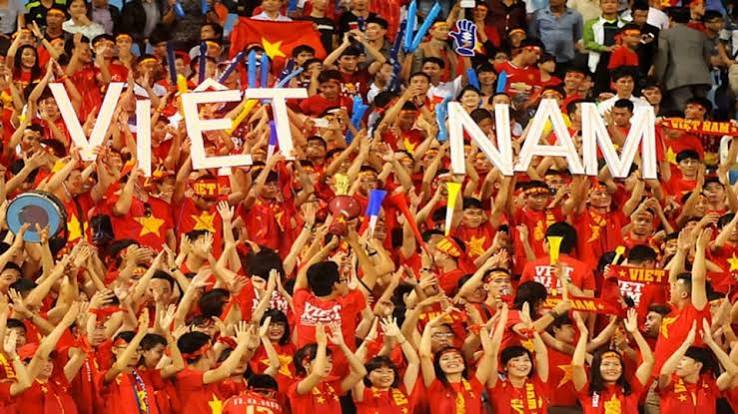
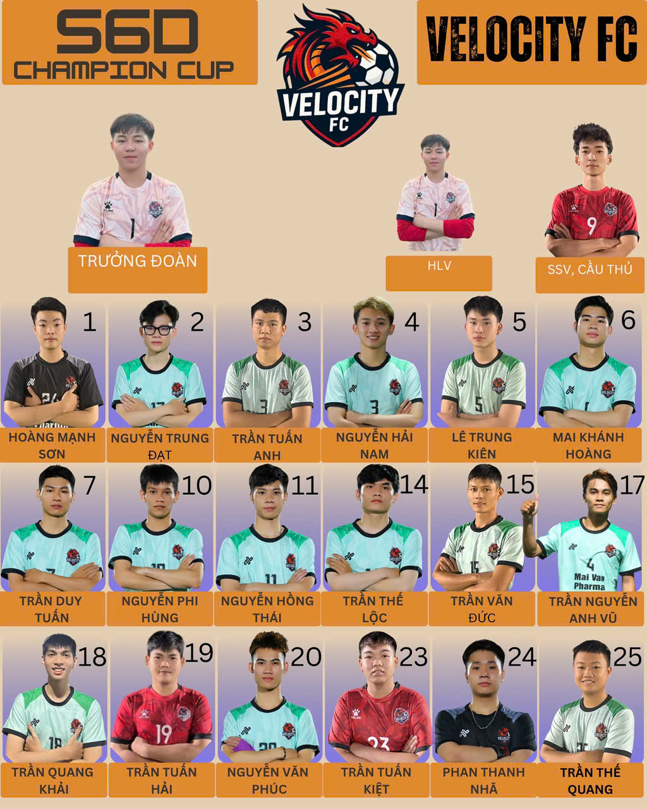

Đội bóng cộng đồng · Đà Nẵng
TỐC ĐỘ
TẠO NÊN KHÁC BIỆT.
Thành lập khoảng 8 tháng, VELOCITY FC quy tụ sinh viên và người đi làm tại Đà Nẵng — cùng nhau chơi bóng, cùng nhau tiến lên.
KHÔNG NGỪNG TIẾN LÊN ✳
ĐOÀN KẾT TẠO SỨC MẠNH ✳
TỐC ĐỘ LÀ BẢN SẮC ✳
KHÔNG NGỪNG TIẾN LÊN ✳
MỘT ĐỘI BÓNG NHỎ, MỘT TINH THẦN LỚN
VELOCITY FC
ĐẾN TỪ ĐÀ NẴNG.
Chúng tôi là những người bạn cùng yêu bóng đá — có người vẫn đang đi học, có người đã đi làm. Thành lập khoảng 8 tháng, đội chọn sân cỏ làm nơi kết nối, rèn luyện và góp sức cho cộng đồng.
CHẤT BÓNG ĐÁ MIỀN TRUNG
Dưới cái nắng gắt hay những cơn mưa rào Miền Trung, bóng đá phong trào Đà Nẵng chưa bao giờ hạ nhiệt. Đó không chỉ là những trận phủi rực lửa sau giờ làm, mà còn là nơi gắn kết tình anh em, nơi cái “chất” chịu cày, lối đá hào sảng và niềm đam mê mãnh liệt của người dân xứ Quảng - Đà được cháy hết mình trên từng mặt cỏ.
VELOCITY FC · ĐÀ NẴNG
VELOCITY FC · ĐỒNG ĐỘI
MỖI NGƯỜI MỘT HÀNH TRÌNH
RIÊNG MỘT CUỘC SỐNG.
CHUNG MỘT ĐỘI BÓNG.
Mỗi anh em một công việc riêng, một cuộc sống riêng. Nhưng khi liên kết lại, chúng tôi trở thành một đội — cùng chinh chiến, cùng đồng hành qua từng trận đấu, từng giải đấu.
NHỮNG NGƯỜI TẠO NÊN CUỘC CHƠI
ĐỘI HÌNH VELOCITY.
Tài năng riêng biệt.
Một mục tiêu chung.

LỜI KẾT · VELOCITY FC
CHẶNG ĐƯỜNG
MỚI BẮT ĐẦU.
Tuy mới thành lập không lâu, VELOCITY FC luôn sẵn sàng thi đấu với những đội bóng có thâm niên lâu năm, để có cơ hội cọ xát và học hỏi kinh nghiệm từ những đội bóng có tiếng ở Đà Nẵng.
Mong VELOCITY FC sẽ luôn lớn mạnh và duy trì lâu dài, là nơi anh em rèn luyện thể lực và cùng nhau thi đấu.
Gửi lời nhắn cho độiĐÀ NẴNG · VIỆT NAM